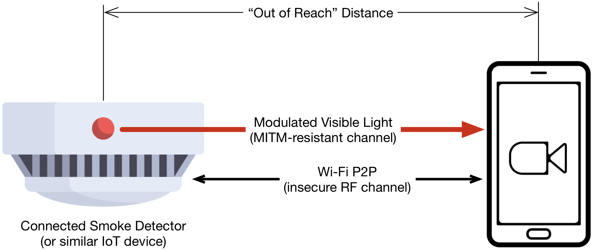

Secure Authentication of Remote IoT Devices Using Visible Light Communication (VLC)
Why is there a need of a new IoT authentication protocol?
Due to a lack of trusted Certificate Authorities (CA) for IoT devices in local networks, authentication of remote IoT devices requires physical access or trusted third parties. This project eliminates these needs and introduces a new secure authentication using VLC:- ∙ No physical access required (line-of-sight)
- ∙ Low-cost transmitter extension (RGB LED)
- ∙ Ordinary receiver (Android based smartphone)
- ∙ Dynamic authentication data (certificate rotation)
Sketch of Operation
As shown in the illustration above, the smoke detector (or any other IoT device) is not easily reachable, however the device is within the line of sight. Based on this, the device cannot be authenticated without knowing a shared secret or performing proximity based approaches like push button authentication. Often, printed labels or QR codes located on device's back serve as a shared secret.Using a Wi-Fi peer-to-peer (P2P) connection from the smartphone to the smoke detector, which is accepted automatically by any device which is not part of a Wi-Fi infrastructure, the smoke detector sends its certificate to the smartphone in order to do a transport layer security (TLS) handshake. After the handshake has completed, the connection is encrypted but not authenticated. If the certificate has not been signed by a CA that the smartphone trusts, e.g., if the certificate is self-signed, the smartphone must use a MITM-resistant channel to authenticate the certificate.
The smartphone requests the fingerprint of the certificate to be sent on the visible light channel. By pointing the camera at the smoke detector, we ensure there is a direct link for transmission. After receiving the fingerprint matching the TLS certificate's fingerprint, the TLS connection is authenticated.